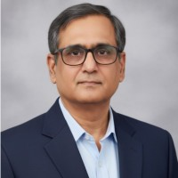

Krishna M S
Enterprise IT, Cybersecurity & Digital Transformation Leader
An accomplished executive with over 25 years of cross-functional experience directing enterprise IT operations, critical infrastructure, and rigorous information security frameworks across complex global environments. Trusted advisor to corporate boards who seamlessly bridges technical architectures with long-term commercial goals—mitigating multi-regional risk metrics while sustaining high availability across enterprise systems.

Executive Leadership & Business Impact
Leading enterprise IT, cybersecurity governance, and digital transformation initiatives that strengthened security, operational resilience, and business performance across global organizations.
Head of IT
Toradex Systems India Pvt. Ltd.
Led global IT strategy, enterprise infrastructure, cybersecurity governance, and cloud transformation initiatives supporting worldwide business operations. Partnered with executive leadership to strengthen security, operational resilience, regulatory compliance, and technology-enabled business growth across global locations.
- Enterprise Information Security Governance: Owned enterprise Information Security Governance supporting 170+ employees across global operations, establishing security policies, governance processes, risk registers, and internal controls aligned with ISO/IEC 27001:2022 and the NIST Cybersecurity Framework.
- SO/IEC 27001 Leadership: Directed the end-to-end implementation of the Information Security Management System (ISMS), including internal audits, management reviews, and certification activities, achieving first-time ISO/IEC 27001:2022 certification with zero major non-conformities.
- Cloud & Enterprise Infrastructure Transformation: Led modernization initiatives across AWS and Microsoft Azure, improving infrastructure resilience, scalability, and operational efficiency while reducing infrastructure costs by 10%.
- Operational Excellence: Optimized enterprise IT operations, reducing overall IT operating costs by 15%+ while improving service reliability, operational efficiency, and business resilience.
- Leadership & Collaboration: Led a high-performing IT team while partnering with executive leadership, business stakeholders, auditors, and global teams to deliver secure, scalable, and business-aligned technology services.
Senior Manager — IT
Stoke Networks Pvt. Ltd.
Governed multi-regional infrastructure operations supporting mission-critical cross-functional operations across India and the United States. Led cross-functional engineering teams to orchestrate large-scale capital transitions with minimized operational friction.
- Operational Relocation: Planned and executed a complex data center and hardware infrastructure migration containing 10+ core server racks without experiencing single-point-of-failure outages.
- ITIL Standardization: Deployed institutional upgrades matching rigorous ITIL patterns to elevate mean-time-between-failures (MTBF) and infrastructure availability.
IT Manager
Yodlee Inc.
Commanded a critical infrastructure operational budget exceeding half a million dollars ($0.5M), optimizing security configurations and localized service desks across dense high-volume business centers.
- Business Resilience Architecture: Modeled and tested high-availability BCP/DR matrices, cutting targeted disaster recovery windows by 30%.
- Infrastructure Operations: Enterprise IT Operations: Strengthened enterprise IT operations, end-user support, and infrastructure security for 300+ engineering and business users, improving service reliability and operational efficiency.
Core Competencies
Strategic oversight and architectural depth tailored for corporate security governance.
Cybersecurity Governance
Constructing modern programmatic enterprise defenses aligned strictly with international control matrices and threat modeling.
Enterprise IT Architecture
Bridging complex distributed technical environments with overarching strategic corporate initiatives.
Cloud Strategy & Security
Orchestrating structural guardrails across public cloud platforms (AWS, Azure) to secure multi-tenant footprints.
Risk Management & GRC
Implementing systemic processes across complex vendor networks to evaluate risk postures and operational exposure.
ISO 27001 & NIST Compliance
Translating demanding regulatory controls into daily habits through active control auditing and systemic checks.
Business Continuity (BCP/DR)
Formulating active mitigation playbooks to guard global computing capacity against service interruptions.
Professional Recommendations
The following recommendations are from colleagues at Toradex, where I spent more than 12 years leading global IT and cybersecurity initiatives. They represent perspectives from senior leaders, peers, and team members, reflecting the trust, collaboration, and business partnerships built during that journey.
Executive Leadership
"I enjoyed working with Krishna. He took my concerns seriously, kept communication clear, and addressed issues quickly and reliably. Collaborating with him was straightforward, and I always knew where things stood."
"I had the pleasure of working alongside Krishna for 12 years at Toradex. Throughout this time, Krishna consistently provided great support to me and my teams. His focus on quick support extended to his entire team. He was instrumental in building and shaping our IT infrastructure. Krishna’s collaborative spirit and technical knowledge made a significant impact. I recommend him to any team looking for a committed and passionate IT professional."
Peer Collaboration
"I had the privilege of working with Krishna for over 10 years, during which he consistently demonstrated excellent leadership and deep expertise in IT management. With more than 20 years of industry experience, Krishna effectively managed complex IT environments with a strong focus on security. He led initiatives to improve security awareness and ensure compliance with ISO standards and industry best practices. His ability to explain technical concepts clearly while balancing security and business needs was exceptional. I am confident Krishna will bring the same expertise and dedication to his next role."
"I had the pleasure of working with Krishna for over 12 years, collaborating across various roles and projects. Throughout this time, he consistently stood out as an exceptional IT Operations leader—goal-oriented, solution-driven, and always pragmatic in his approach. What I admire most about Krishna is his ability to stay focused on what truly matters while keeping the team motivated and aligned. He is a true team player who brings out the best in those around him. I highly recommend Krishna to any organization looking for a strong and reliable IT Operations leader."
Team Leadership
"I worked with Krishna while reporting to him as an IT Systems Engineer, and during that time I appreciated his structured and disciplined approach to IT operations. He consistently emphasized process adherence, budget awareness, and accountability, bringing clarity to IT decision-making and asset management. His focus on cost control and compliance ensured that IT operations aligned closely with organizational policies and long-term planning. As a manager, he set clear expectations and encouraged the team to work in a methodical and results-oriented manner. Working under his leadership strengthened my understanding of enterprise IT support, operational efficiency, and professional responsibility. I believe his experience in managing IT environments and maintaining operational discipline would be valuable to any organization seeking a detail-oriented and structured IT leader."
"I had the pleasure of working with Krishna during his time as Head of IT at Toradex. Krishna stands out as a leader who combines strong technical expertise with genuine empathy and trust. He fosters collaboration, encourages growth, and leads with integrity, creating an environment where people truly enjoy doing their best work."
Credentials & Accreditations
Validated technical mastery and executive governance standards from elite global organizations.
Certified Information Security Manager
ISACA
Certified Chief Information Security Officer
EC-Council
ISO/IEC 27001 Lead Auditor
BSI / International Bodies
Certified Ethical Hacker
EC-Council
ITIL Foundation
AXELOS
IT Disaster Recovery Specialist
Professional Frameworks
Core Enterprise Platform Footprint
Initiate a Leadership Conversation
Seeking an experienced governance architect to secure your cloud journey, eliminate enterprise vulnerabilities, or lead a comprehensive IT compliance overhaul? Let's connect.